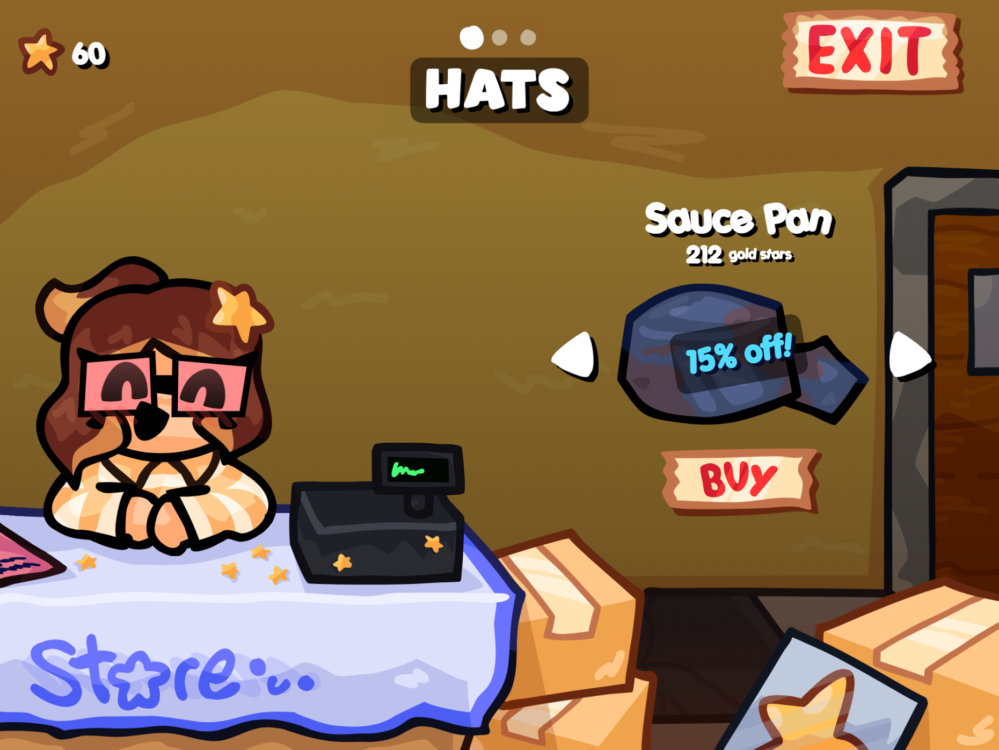

Devlog 26.10.1
October 23rd, 2026
The Gameplay Update ™
It's been a while since I've posted a proper Hall Pass update, but I'm proud of how this one turned out! I've spent a lot of time fixing bugs, improving existing systems, and adding some other new features to make sure the wait was worth it.
Some of the things that I added are...
I've decided to move the project over to PenguinMod, which gives me access to more extensions and tools that will help further expand Hall Pass into a proper game.
I've added a brand-new shop run by your new shopkeeper, Pandora! You'll be able to spend your Gold Stars on different items, with discounts and special deals to give you more reasons to save up and spend your hard-earned stars.
I reworked how cards are unlocked, equipped, and organized. This should make managing your cards much easier and give you more flexibility to customize your setup before fighting.
I've given Hall Pass a fresh coat of paint, with updated card designs and other visual improvements to help everything feel more polished and consistent.
I created a new text engine to improve how text is displayed throughout the game. This gives me more flexibility with dialogue and other text-based features going forward.
Battles now have the potential to be a little more unpredictable with the addition of critical damage. This should add another layer to combat and give attacks the chance to hit harder than usual.
A new dialogue system has been added to make Hall Pass feel more lively, as well as replaced the flavor text in favor (get it) of this system.
You can now customize Eric with hats and card skins! These give you more ways to personalize your fights and cards, making your setup feel a little more stylized.
In conclusion...
There's still plenty more I want to do with Hall Pass, this is only just the beginning. I have some other ideas I'm hoping to bring to life in future updates, especially now with the change in Scratch engines. For now, I'm happy with how much progress I've made, and I hope these additions make the game a little more replayable.
One last thing; Since I've switched the game over to PenguinMod and reworked some of its core systems, you'll need to restart your progress to play this update. Unfortunately, the old save data isn't compatible with the new version, so your previous progress won't carry over. I know this isn't ideal, but it was the only way to make these changes work properly.
Thank you for understanding and taking the time to read my devlog, and make sure to check out my other work!
-Neon